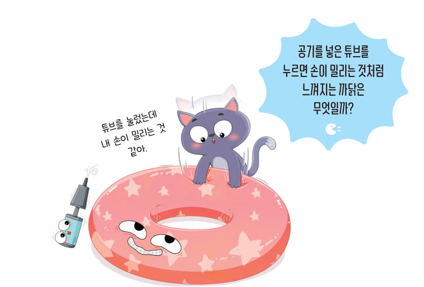
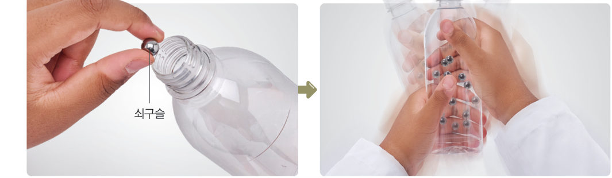
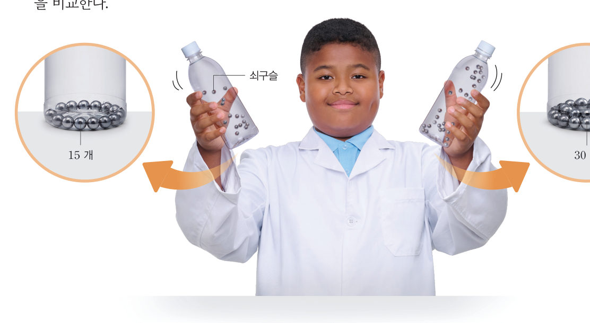
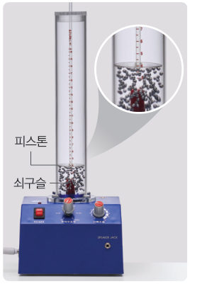
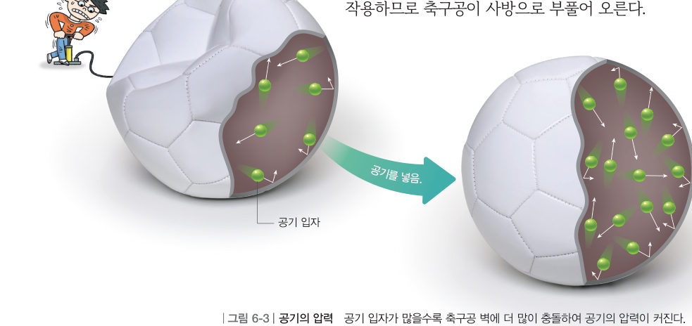
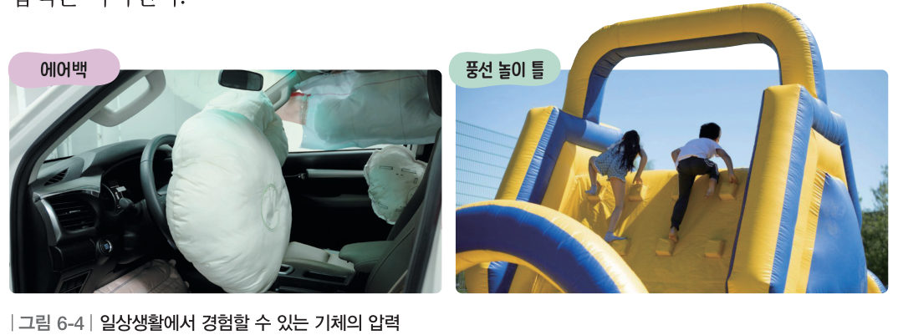
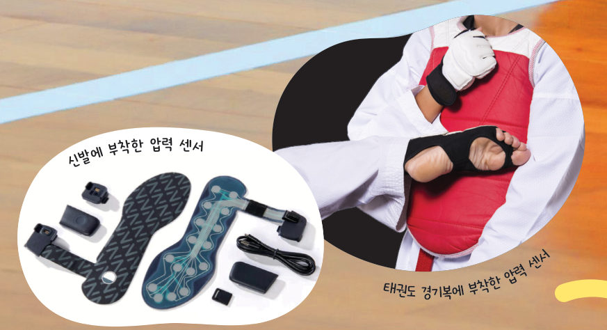

기체의
압력
“튜브를 눌렀는데 내 손이 밀리는 것 같아.” 공기를 넣은 튜브는 왜 손을 밀어낼까? 3D 페트병 속 쇠구슬을 흔들어 보고, 찌그러진 축구공에 공기를 넣어 보며 기체의 압력이 나타나는 까닭을 입자 운동으로 알아보자.
기체의 압력이 나타나는 까닭은 무엇일까?
튜브에 공기를 넣으면 튜브가 사방으로 부풀어 오르고, 공기를 넣은 튜브를 손으로 누르면 손을 밀어내는 힘이 느껴진다. 이것은 공기와 같은 기체에서도 압력이 나타나기 때문이다.

- 관찰 페트병에 쇠구슬 15 개를 넣고 뚜껑을 닫은 다음, 양손으로 잡고 좌우로 흔들어 손바닥에 느껴지는 힘을 확인한다.
- 다른 페트병에 쇠구슬 30 개를 넣고 뚜껑을 닫는다.
- 관찰 각각의 페트병을 같은 빠르기로 좌우로 흔들면서 손바닥에 느껴지는 힘을 비교한다.

다르게 해 보기 · 기체 입자의 운동 실험 장치로 기체의 압력 알아보기

① 스마트 기기로 피스톤과 쇠구슬의 움직임을 슬로 모션으로 촬영하여 관찰한다. ② 실험 장치에 쇠구슬을 더 넣은 뒤 과정 ①을 반복한다.
정리 쇠구슬을 기체 입자라고 할 때, 피스톤을 밀어 올리는 힘은 어떤 특징이 있는지 이야기해 보자.
기체 물질을 구성하는 입자는 끊임없이 운동하면서 물체에 충돌해 힘을 가한다. 이때 일정한 면적에 기체 입자가 충돌해서 가하는 힘을 기체의 압력이라고 한다. 기체 입자가 모든 방향으로 운동하면서 충돌하기 때문에 기체의 압력은 모든 방향으로 작용한다. 또 일정한 크기의 용기 안에 들어 있는 기체 입자의 수가 많으면 입자가 용기 벽에 충돌하는 횟수가 늘어 기체의 압력은 커진다.
찌그러진 축구공에 공기를 넣으면 그림 6-3과 같이 축구공 속 공기 입자의 수가 늘어나 공기의 압력이 커진다. 또 공기의 압력이 모든 방향으로 작용하므로 축구공이 사방으로 부풀어 오른다.

기체의 압력은 그림 6-4와 같이 다양한 상황에서 경험할 수 있다. 운전자의 충격을 줄여 주는 자동차 에어백이나 아이들이 즐겁게 놀 수 있는 풍선 놀이 틀은 기체가 차면서 기체의 압력이 커져 부풀어 오른다. 또한 우리는 공기에 둘러싸여 있으므로 늘 공기의 압력을 받고 있고, 보통 위로 올라갈수록 공기의 양이 줄어들어 공기의 압력은 작아진다.


사물 인터넷(IoT) 기술이 발달하면서 스포츠 분야에서는 센서를 선수의 몸이나 장비에 부착하여 실시간으로 데이터를 수집·분석함으로써 선수들의 능력 향상을 꾀하고 있다. 신발 안에 압력 센서를 넣고 발이 누르는 압력을 측정하여 바른 자세로 뛰거나 걷고 있는지 판단할 수 있다. 태권도에서는 압력 센서를 부착한 경기복을 입고 시합을 하여 공정한 판정을 내리고, 농구에서는 3 점 슛 라인에 압력 센서를 부착하여 득점 상황을 판정하기도 한다.
페트병에 쇠구슬을 넣고 흔들면 쇠구슬이 페트병 벽에 한다. 이러한 힘 때문에 이 나타난다.
| ④ 끊임없이 운동하는 기체 입자들이 용기 벽에 충돌하면서 힘을 가하기 때문에 압력이 나타난다. | |
| ⑤ 풍선에 헬륨을 넣으면 풍선이 팽팽해지는 까닭은 헬륨 기체 입자의 충돌 횟수가 감소하기 때문이다. | |
| ⑥ 바람 빠진 농구공에 공기를 채우면 농구공 속 기체 입자 수가 증가한다. |
| ⑧ 자동차가 충격을 받으면 에어백이 부풀어 오르면서 운전자의 충격을 줄여 준다. | |
| ⑨ 큰 풍선 놀이 틀에 공기를 가득 채우면 아이들의 무게를 이겨 낼 수 있다. | |
| ⑩ 겨울철 처마 끝에 고드름이 생긴다. |
2기체의 압력
(2) 기체의 압력은 모든 방향으로 작용한다.
(3) 용기 안에 들어 있는 기체 입자의 수가 많으면 기체 입자의 충돌 횟수가 늘어 기체의 압력은 .
(4) 기체의 압력을 이용한 예: 에어백, 풍선 놀이 틀
| 평가 항목 | 스스로 평가 |
|---|---|
| 지식·이해 기체의 압력을 입자 운동으로 설명할 수 있는가? | |
| 과정·기능 모형을 이용하여 기체의 압력 실험을 수행할 수 있는가? | |
| 가치·태도 현상을 과학적 원리로 설명하면서 흥미를 느꼈는가? |